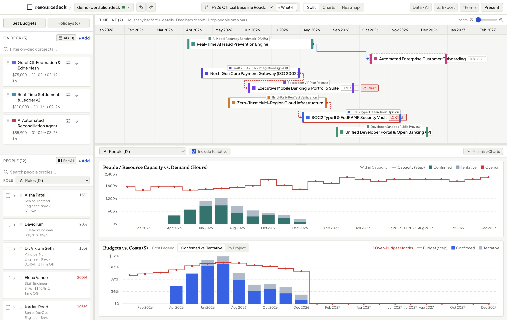
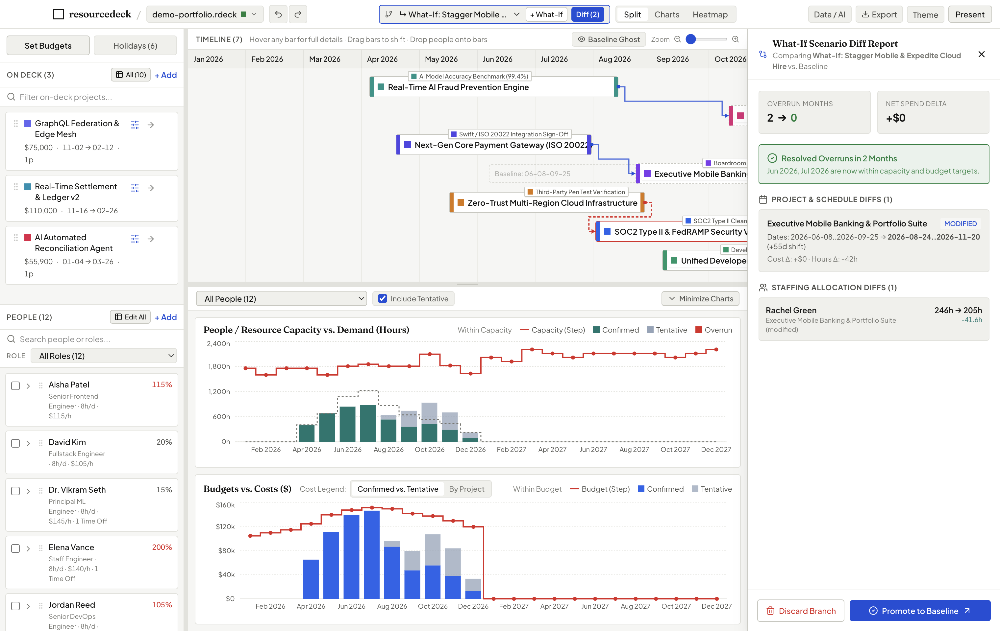
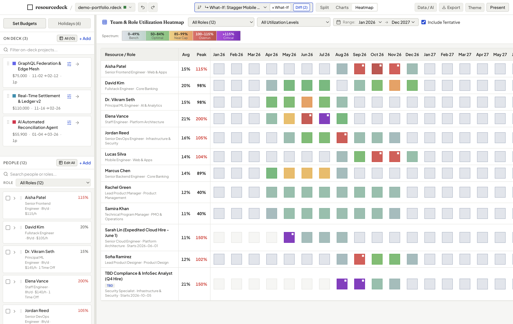
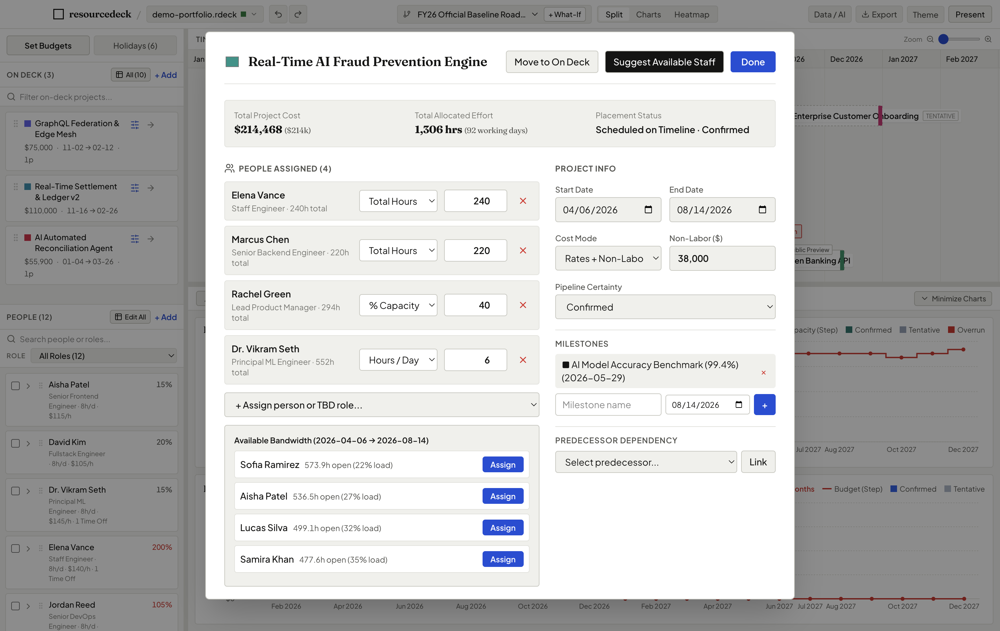
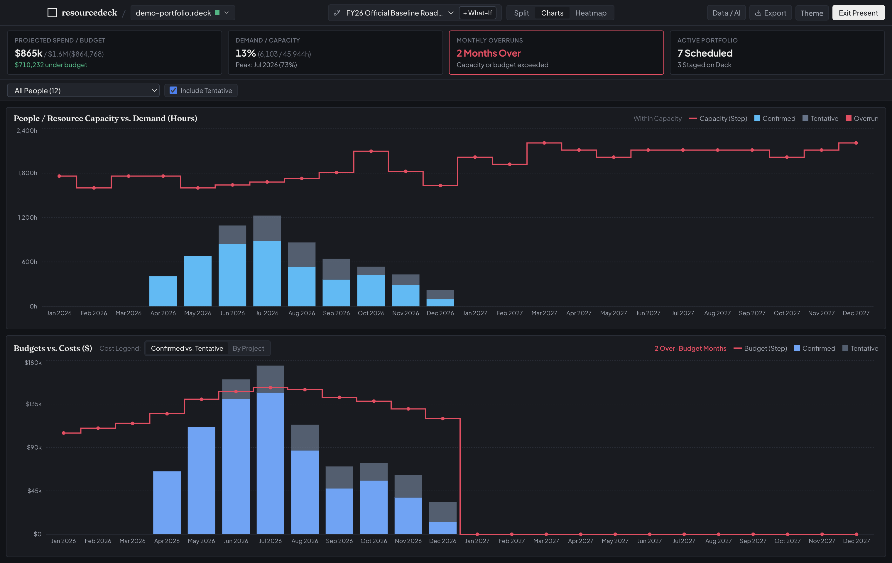
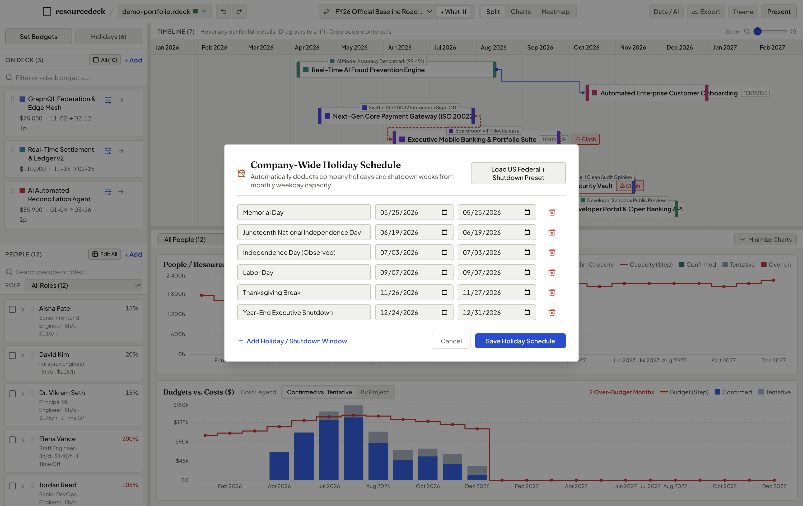
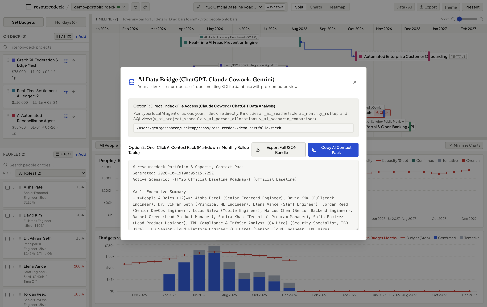

Stop fighting broken spreadsheets and heavyweight enterprise tools. Capture your people, projects, and budgets in one place to plan capacity, balance workloads, and answer “Can we deliver this on time?” with absolute certainty.
Free & Open Source desktop app for macOS (Apple Silicon & Intel) & Windows
.rdeck File

Spreadsheets break when formulas get complex. Enterprise tools take months to configure. resourcedeck provides immediate, deterministic answers.
Stage candidate projects in your deck and drag them onto the timeline. Instant capacity charts reveal whether your team can absorb the hours without overtime.
The People × Months utilization matrix flags bottlenecks above 100% in red and highlights available bandwidth so you balance workload fairly.
Branch a What-If scenario in one click. Dashed Baseline Ghost Bars show previous dates, while the diff drawer quantifies exact cost and hour changes.
Step into executive steering committees with synchronized spend charts that highlight cost overruns the moment dates or allocations move.
The foundation of sound resource management is keeping supply, demand, and financials aligned. resourcedeck unites all three seamlessly.
Model your real organizational capacity. Define roles, departments, skill tags, hourly cost rates, and daily working hours.
Stage scheduled initiatives alongside candidate backlog ideas. Prioritize by strategic ROI value score and track milestones.
Set monthly budget limits and watch projected costs update instantly. Highlight budget overruns in red before leadership reviews.
Never overwrite an approved baseline plan just to test a trade-off. Fork a What-If scenario branch in one click to experiment freely with project timing, staffing reallocations, or scope shifts.
Dashed outlines remain visible on the Gantt timeline, showing exactly where projects lived in the approved plan while you drag new dates.
Inspect date shifts, net hours variance, and dollar delta changes across your entire portfolio in a clean slide-out drawer.
When the executive steering committee approves your scenario, promote the branch to become the new official Baseline with one click.


The Team & Role Utilization Heatmap organizes your resources across months into an intuitive, color-coded matrix. View by individual person, grouped by Department, or aggregated by Role.
Click any cell to open an instant breakdown of exactly which projects are driving that person’s hours for the month.
No awkward formula recalculation during executive presentations. resourcedeck is tuned for clarity, speed, and numerical legibility.

When assigning staff to a project, click “Suggest Available Staff”. The engine scans your organization and ranks team members by required skill match and open bandwidth in that exact date window.

Press Cmd+P to collapse sidebars and toolbars. Surfaces high-level Executive KPI cards (Spend vs. Budget, Overrun Count, Active Portfolio) with high-contrast themes and tabular typography.
Human capacity isn’t 160 hours every month. resourcedeck accounts for real business calendars: company-wide federal holidays, year-end shutdowns, and personal PTO.

Need an executive briefing written or an AI risk assessment? Tap Cmd+Shift+A to generate a structured Markdown context pack with pre-computed monthly rollups ready to paste into any LLM.

Enterprise resource planning tools charge $50 to $100 per user per month while locking your strategic plans inside proprietary clouds. We believe project managers and resource leaders deserve a fast, reliable desktop workbench that respects their privacy, runs 100% offline, and costs nothing.
Share plans with your PMO, coordinators, and directors without worrying about seat fees or license tiers.
Every plan is stored locally in an open SQLite (.rdeck) file. No vendor lock-in, ever.
Zero telemetry. Your staffing rates, project budgets, and employee names never touch a cloud server.
Why project and resource managers choose resourcedeck over fragile spreadsheets and complex enterprise software.
| Capability | resourcedeck | Excel / Google Sheets | Enterprise Cloud PPM |
|---|---|---|---|
| Cost & Licensing | Free & Open Source Forever | Part of Office / Workspace | $50–$100+ / user / month |
| Tactile Drag-and-Drop Timeline | Native, dynamic Gantt | Rigid cell date formulas | Slow, rigid web canvas |
| What-If Scenario Modeling | 1-Click Branch, Ghost Bars & Diff | Fragile copy-pasted tabs | Complex administrator setup |
| Live Overrun Red Alerts | Instant Capacity & Budget Red | Manual conditional formatting | Delayed batch syncs |
| Setup & Onboarding Time | < 2 minutes (Zero setup) | Weeks of formula building | 3 to 6 months implementation |
| Privacy & Data Security | 100% Offline · Local SQLite File | Cloud shared drives | Vendor cloud database lock-in |
Common questions from project managers, PMOs, and resource directors.
Yes. resourcedeck is published under the open source MIT License. There are no user limits, no trial periods, no hidden features locked behind a credit card, and no subscription fees. You can use it freely across your entire organization.
resourcedeck is available as a standalone desktop application for macOS (both Apple Silicon and Intel) and Windows (64-bit). Simply download the installer, open it, and begin planning immediately—no complex installation or developer tools required.
resourcedeck uses a pure deterministic calculation engine based on actual working weekdays (skipping weekends). It automatically deducts corporate holidays, shutdown windows, and individual PTO to calculate exact net working hours and cost distribution month-by-month.
resourcedeck is 100% local-first and offline. Your entire plan is stored in a single .rdeck file (standard SQLite) on your local hard drive or shared company folder. There is zero telemetry, zero analytics tracking, and no cloud server.
Yes. A .rdeck file is a single self-contained file. You can email it, commit it to a repository, or put it in Google Drive, OneDrive, or Box for your PMO team to open.
Download resourcedeck today. Zero onboarding, zero credit cards, zero telemetry. Start balancing your team and projects in minutes.